This is a walkthrough, not a proposal. Nothing on the following slides asks for budget, headcount, or a sign-off.
Every mispaid hand is money leaving the property — and a pattern of them is a training gap that is not measured.
The distance between what the manual says and what the muscle memory does widens slowly, and never announces itself.
When someone asks for proof that a team is trained, an attendance sheet is not a record of competence.
Most training answers “did they attend?” A readiness system has to answer “can they still do it — and how do you know?”
Drawn live from the game and procedure pools, capped at ten minutes, scored on accuracy and speed.
Instant feedback on every answer, plus dedicated skill trainers. Never touches a score or a cooldown.
Scores, accuracy, weak areas, monthly certification, and an export you can hand to an auditor.
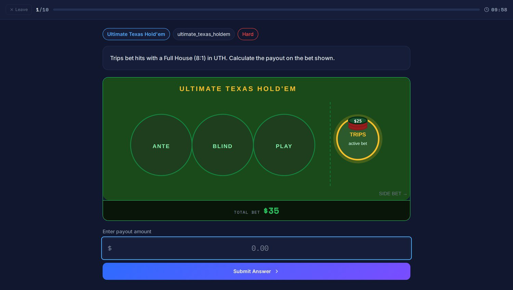
Payout answers are computed from bet × ratio, not matched against stored text. The chip stack changes on every draw.
| Finish time | Multiplier | 10/10 | 8/10 |
|---|---|---|---|
| ≤ 5:00 | ×1.5 | 150 | 120 |
| 5:00 – 7:30 | ×1.25 | 125 | 100 |
| 7:30 – 10:00 | ×1.0 | 100 | 80 |
Eight correct in four minutes (120) beats ten correct in eight (100). Rushing only pays while you stay accurate.
The cooldown caps a realistic day at two or three sessions. Certification cannot be crammed into the last week of the month — which is the point.
A hard question is worth the same ten points as an easy one. Difficulty controls what you are asked, not what it is worth — so scores stay comparable across the team.
Sessions are assembled at the moment you press Start. There is no fixed set to pass around.
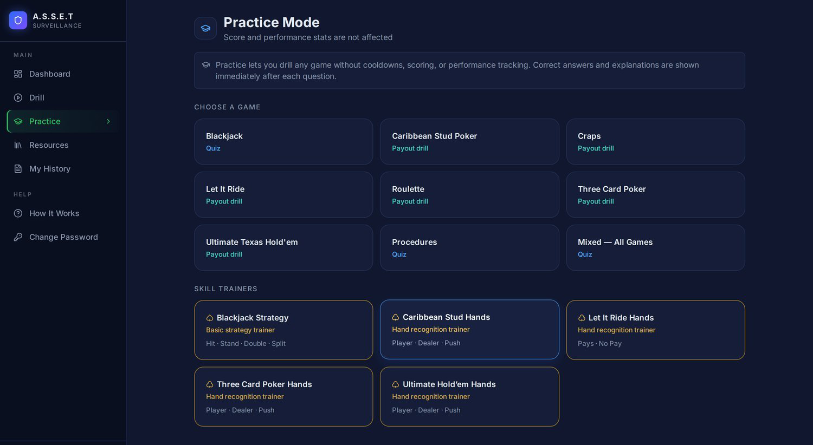
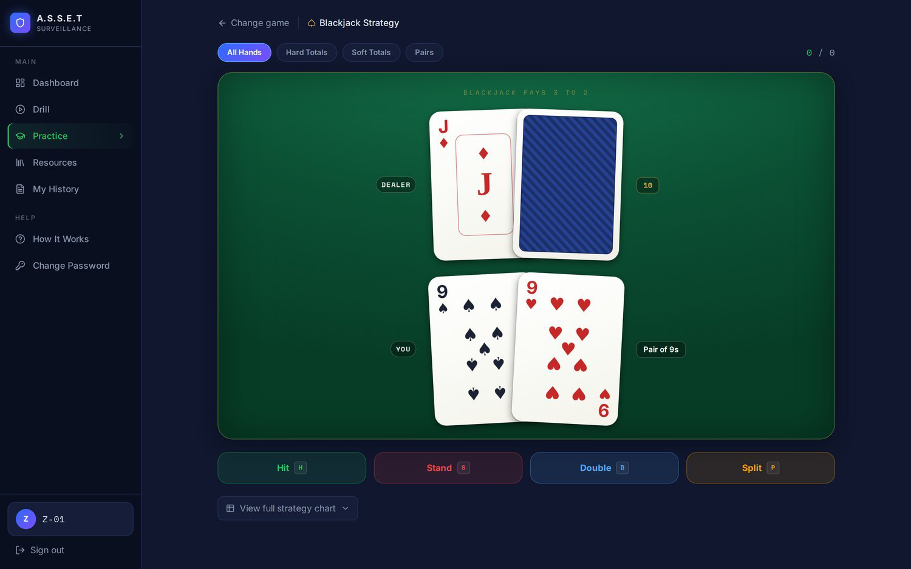
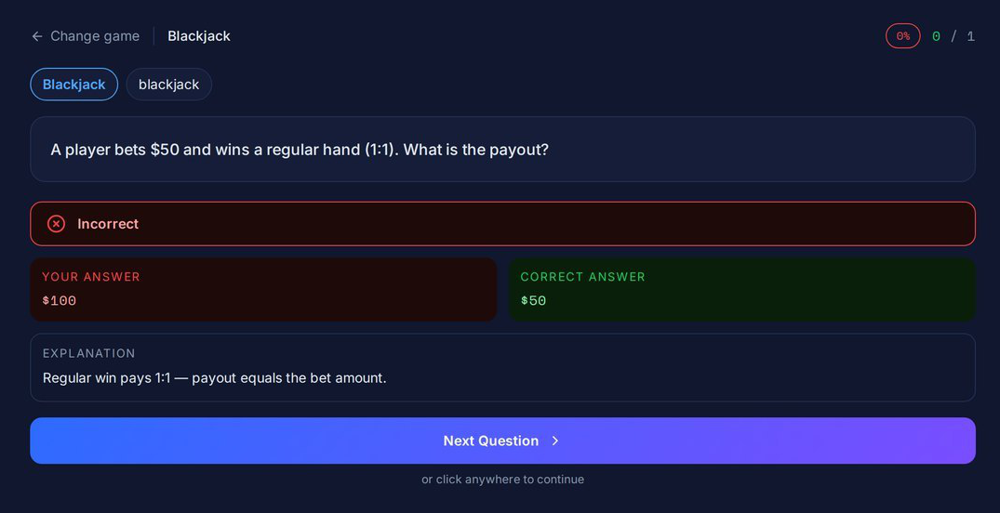
A wrong payout corrected in the moment, with the reasoning attached, is worth more than a classroom hour a quarter later.
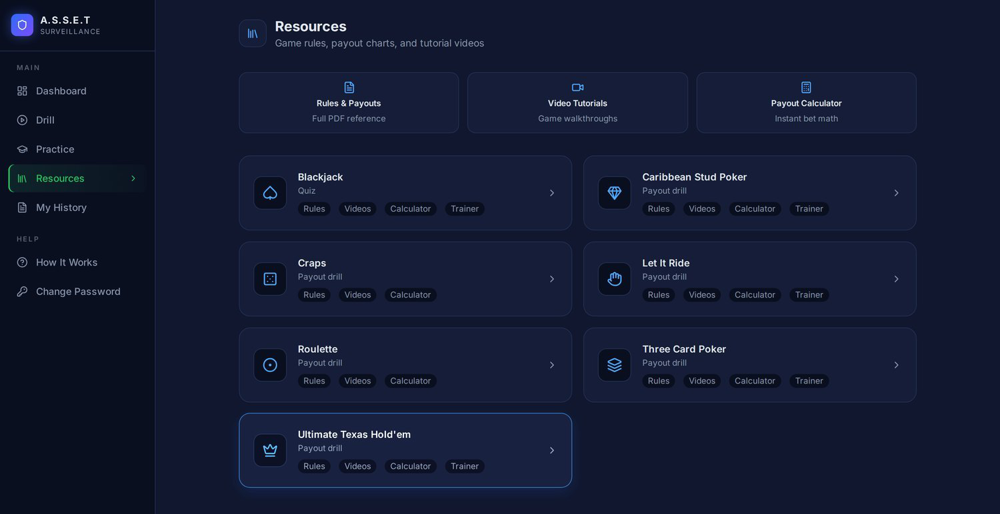
Resources is one of only three things both departments share — alongside the question pool and the games. Pit sees the same library Surveillance does, with nothing separate to build or maintain.
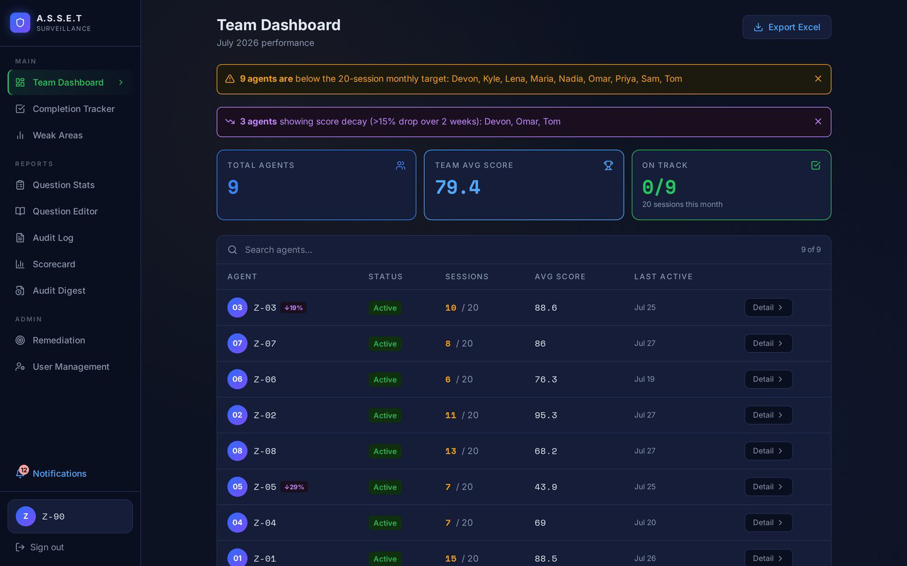
Deactivated accounts stay on the roster to preserve their history, and they still count toward “below target”.
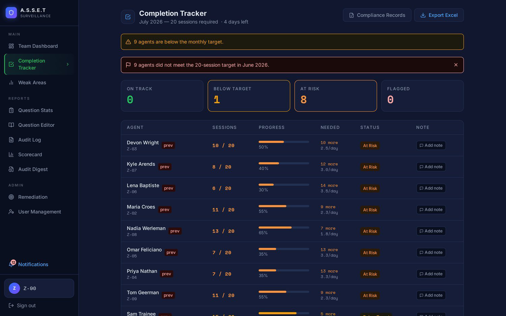
| Status | What it means |
|---|---|
| On Track | 20+ sessions — certified for the month |
| Below Target | Short, but recoverable at a normal pace |
| At Risk | Needs more than 1.5 sessions a day — speak to this group |
| Flagged | Short on the final day — now a compliance fact |
The Needed column gives both the shortfall and the sessions-per-day required to close it — so the conversation is “you need two a day”, not “you're behind”.
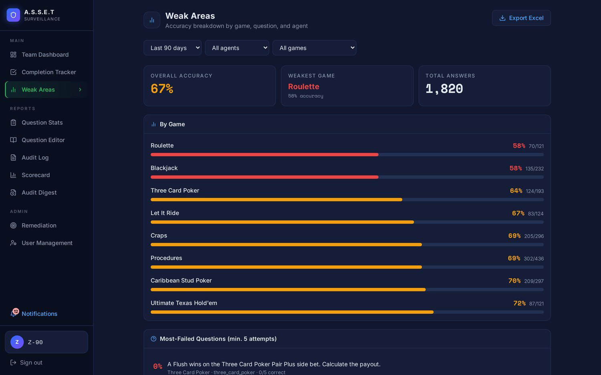
A game at 55% over 400 answers is a training problem. The same 55% over nine answers is noise. Volume sits beside every rate for exactly this reason.
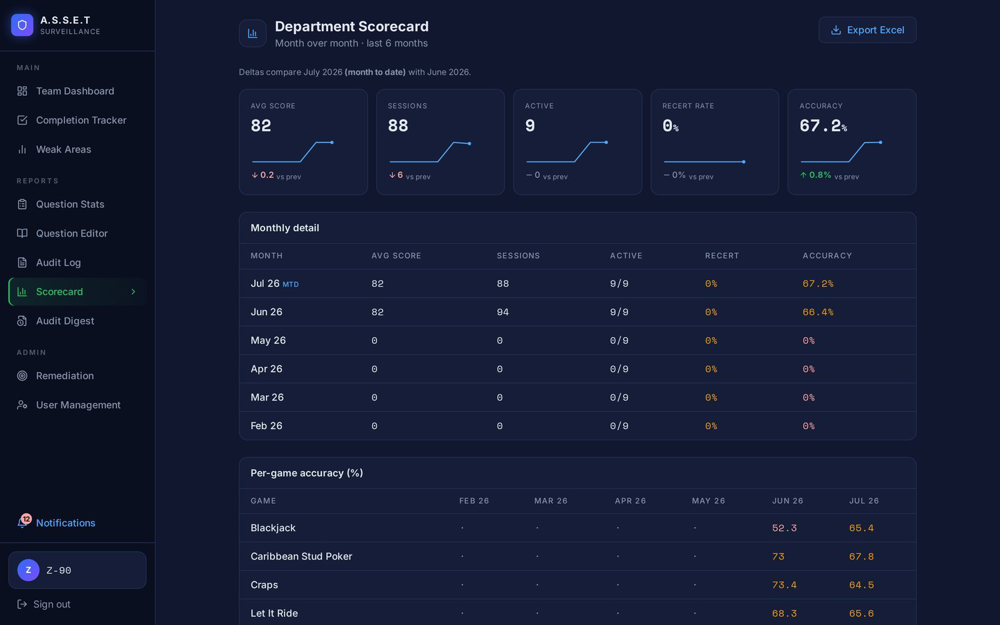
| KPI | What it measures |
|---|---|
| Avg Score | Mean of every completed session that month |
| Sessions | Completed sessions; abandons excluded |
| Active | People with at least one session — participation, not headcount |
| Recert Rate | Share of the roster reaching 20 sessions |
| Accuracy | Correct ÷ answered, split by game |
Month-to-date is an incomplete month next to complete ones. Judge it on accuracy and average score — the rate-based measures — and leave volume until the month closes.
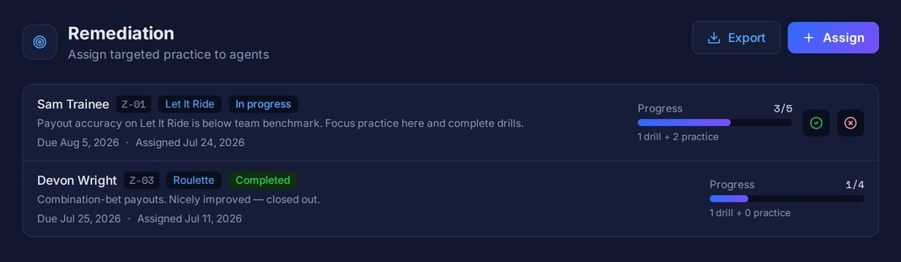
An assignment can only auto-complete once at least one real scored drill has happened. Practice alone can never certify a remediation — assessment integrity is preserved by design.
| Screen | What the file contains |
|---|---|
| Team Dashboard | One row per person: sessions, average, last active |
| Associate’s Detail | That person's full session history and per-game performance |
| Weak Areas | Per-game accuracy and the most-failed questions |
| Question Stats | Every question with shown, correct, and accuracy |
| Audit Log | The activity trail, filtered |
| Scorecard | Six months of KPIs and the per-game matrix |
There is no way to export another department's data. Not a setting — it is enforced in the database.
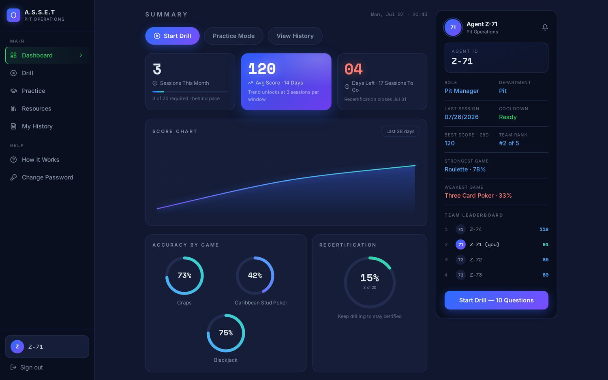
There is no Pit version to develop, no integration to schedule, and no licence to buy. The capability is live and ready to use.
A Pit Manager is ranked only against Pit; a Surveillance agent only against Surveillance. Because the populations are different, a figure from a Surveillance report and a figure from a Pit report should never be set side by side and called a gap.
Blackjack, Let It Ride, Caribbean Stud, Three Card Poker, Ultimate Hold'em, Roulette and Craps are all in the pool — the games the Pit floor runs every shift.
165 shared procedure questions — chip handling, money transactions, fills and credits — eligible in every session, for both departments.
A documented onboarding routine: account, guided tour, practice before the first scored drill, and a recert note for anyone joining mid-month.
Weak Areas points at the game and the question, not the person — so remediation is assigned on evidence rather than impression.
The Compliance Records export gives Pit the same audit-ready training file Surveillance already produces each month.
A Pit management layer with full reporting access but no account powers. It is built, tested, and sitting unused — no account exists yet.
| Control | How it works |
|---|---|
| Row-level security | Access rules live in the database. Role and department are re-derived on every query. |
| Audit log | Append-only. Drill-takers have no access at all. Never records passwords. |
| Lockout | Five failed attempts in fifteen minutes. Every attempt recorded. |
| Timeout | Automatic sign-out after thirty minutes idle. |
| Privileged actions | Account creation, password resets and deletion run server-side with a key that never reaches the browser. |
Every session records an IP address and browser. Its purpose is integrity, not monitoring staff — it is how you confirm or clear a concern that one person drilled on another's account.
There is no automatic purge. Sessions, answers, and audit entries accumulate indefinitely — which is what you want for training evidence, and what you must be deliberate about for privacy.
If the property's records policy requires a limit, that is a decision to take deliberately and document.
The Shift Manager role — full Pit reporting access without account powers. No account exists yet.
Email notifications · two-factor authentication for management · video-clip drills · pre/post-training comparison.
We are open for any suggestions or ideas to make this platform better.
Scored drills produce a number that survives being challenged in a meeting.
Ten pit managers, the same rules, the full management portal — nothing to build.
One file each month answers “prove this team was trained.”